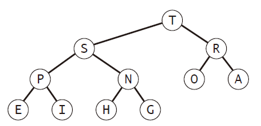

优先队列是一种数据结构，基本的操作包括去除最大元素以及插入元素。通过实现优先队列可以实现堆排序方法，也可以用于模拟系统的优先级操作。
API
1 |
|
优先队列的一个用途就是从长度为N的序列中找出M个最大的元素。
| 增长的数量级 | 时间 | 空间 |
|---|---|---|
| 排序算法的用例 | NlogN | N |
| 调用初级实现的优先队列 | NM | M |
| 调用基于堆实现的优先队列 | NlogM | M |
1 | public class TopM{ |
初级实现
有序数组实现
插入方法insert（）中添加选择合适位置的代码，保证插入的元素一直使得数组有序，时间复杂度为N
delMax（）则与栈的pop方法一致
无序数组实现
插入方法insert（）与栈的push（）一致
delMax（）与选择排序类似，遍历寻找最大元素，然后交换栈顶元素与最大元素，之后pop（）
链表实现
链表与数组类似，也分有序与无序，区别也同样在于是insert（）还是delMax（）中增加代码
优先队列的堆实现
数据结构二叉堆是二叉树的一种特殊形式，规则在于一棵树的三个节点有固定的大小关系。当根结点大于两个子节点时，该二叉堆为堆有序状态。

如果使用指针表示二叉堆，每个节点需要有三个指针指向相关节点。而如果二叉堆的组成结构是一个完全二叉树，则可以使用数组的方式直接表示，按照层级存储的方式不需要指针。
二叉堆也在本文中也简称为堆，堆的第$K$个节点的父节点位置为$floor(K/2)$，子节点为$2K$和$2K+1$。
使用堆可以用对数级别性能完成插入和删除操作。
堆算法
to be continued